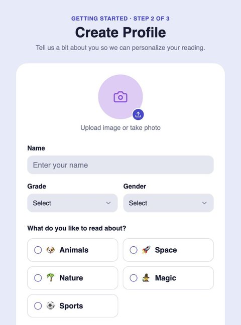
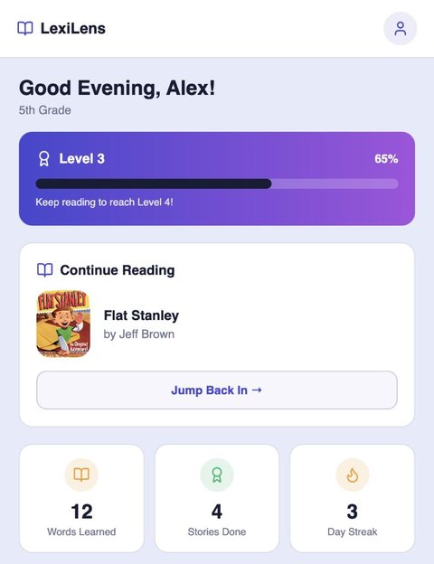
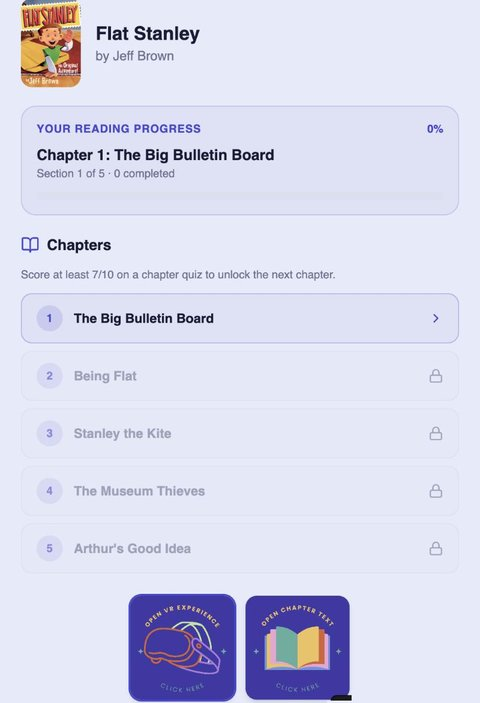
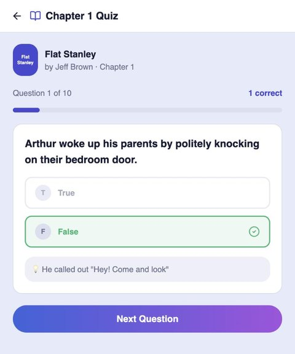

Project Overview
LexiLens is a mobile reading app that helps K-12 students who read below grade level build literacy skills anywhere, not only in the classroom. Students pick books that match their interests, read chapter by chapter, check their comprehension with short quizzes, and unlock the next chapter once they show mastery. Each book also links to an immersive VR experience that brings the story world to life.
How Might We
How might we help a student below grade level improve their reading literacy skills, given they attend a school with low resources and lack of teacher support?
Problem Statement & Context
Students in low-income schools are often below grade level in reading. Reading literacy is a critical skill for taking part in the world and for social mobility: it helps people understand what is around them, connect with others and communicate. Communities with money close this gap with tutoring and outside help. Low-income schools cannot afford tools that reach every student, so the students who need support most are the least likely to get it.
Framing the Problem (5W1H)
We framed the problem by answering who, what, when, where, why and how before designing anything.
Who
Students are affected most. Parents, teachers and school districts are stakeholders, and teachers feel the pressure when students miss standardized-test benchmarks.
When
The gap shows up in and out of class. Students would start using LexiLens as soon as a teacher sees them falling behind.
Where
Across K-12 schooling, and not limited to the classroom: students can use the tool whenever they need reading help.
Why unsolved
A tool that reaches every student is expensive, and low-resource schools cannot fund the support that wealthier communities buy.
Results would show up on classroom assessments and end-of-year testing.
Design Principles
Four principles from the problem statement shaped every screen of the prototype.
- Affordable: a mobile web app that runs on devices students already have, with no special hardware needed to start reading.
- Immersive: each book links to a VR experience, so students can step into the story's world and build background knowledge before or after reading.
- Differentiated: interest-based book choices, reading levels and mastery-gated chapters let each student move at their own pace.
- Community-based: students join their class, so teachers stay connected to progress and reading becomes a social activity.
The Prototype
I designed and built the app interface as a clickable mobile prototype in Lovable. It walks through the core student journey, from first sign-up to a chapter quiz. (The VR experience was developed by my teammate; I designed how students reach it from each book.) Open it on your phone for the best view.




Key Design Decisions
- Mastery before moving on. Locking chapters behind a 7/10 quiz score keeps struggling readers from skimming ahead without understanding.
- Feedback that teaches. After each answer, the quiz shows the line from the story that supports it, so students learn to go back to the text for evidence.
- Choice drives motivation. Interest topics at sign-up and familiar titles (Flat Stanley, Wonder, Coraline, Charlotte's Web) give reluctant readers a reason to open the app.
- Small, visible wins. Levels, streaks and words-learned counts make progress concrete for students who are used to feeling behind.
Reflection & Next Steps
Key Learnings
- Framing the problem with 5W1H before designing kept the team focused on access and equity, not only on features.
- "Immersive" only helps if it supports comprehension, so the VR experience sits next to the chapter text instead of replacing it.
- Rapid prototyping in Lovable let me test the full student journey early and cheaply, which fits a product meant for low-budget schools.
- Designing the interface while a teammate built the VR piece meant agreeing early on where VR fits in the reading flow, so the two parts felt like one product.
Next Steps
Test the prototype with students reading below grade level and their teachers, build out the teacher view for classes, and measure whether quiz scores and reading levels improve alongside classroom assessments.